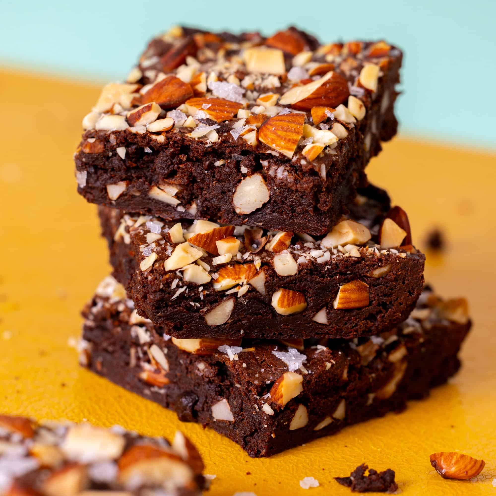

🍫 Brownies de Chocolate

Ingredientes:
- 200g de chocolate oscuro
- 100g de mantequilla
- 1 taza de azúcar
- 3 huevos
- 3/4 taza de harina
- 1 cucharadita de esencia de vainilla
- 1 pizca de sal
Preparación:
- Derrite el chocolate con la mantequilla a baño maría o en microondas.
- Agrega el azúcar y mezcla bien.
- Incorpora los huevos uno a uno, batiendo bien.
- Añade la vainilla, la sal y luego la harina.
- Vierte la mezcla en un molde engrasado.
- Hornea a 180°C durante 25-30 minutos.
- Enfría antes de cortar en cuadritos.
Descargar receta